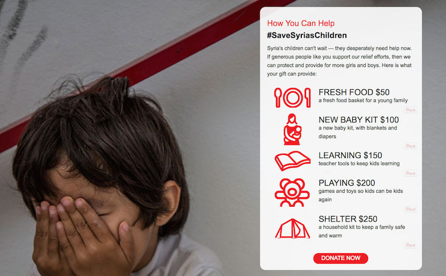

The battle for Aleppo is marked by widespread violence against civilians, repeated targeting of hospitals and schools, and indiscriminate aerial strikes and shelling against civilian areas. Hundreds of thousands of residents have been displaced by the fighting and efforts to provide aid to civilians or facilitate evacuation is routinely disrupted. After four years of fighting, the battle represents one of the longest sieges in modern warfare. The Syrian Observatory for Human Rights (SOHR) registered that in 1612 days of fighting 21,452 civilians died. Among them were 5,261 children under the age of 18. We want to help. The intention of Art For Aleppo is to allow visual artists an outlet to express themselves around the Syrian crisis and to raise awareness and funds to aid in the effort to provide Syrian children emergency care, food and water. You may donate (See to Make a Donation) at any time or submit to the call (See Open call to Artists) by March1, 2017. Artwork will be displayed at Catalyst Gallery in Beacon and exist for purchase online. All monies go directly to Save the Children Syria.
Go to Save the Children Syrian to learn more.
The intention of this call is to allow visual artists an outlet to express themselves around the Syrian crisis and to raise awareness and funds to aid in the effort to provide Syrian children emergency care, food and water..
As artists ourself and considering the reactions by other artists to this tragedy, we felt that this call to action might be a way to give voice to the community in order to raise awareness and hopefully have the potential to heal in some way. Additionally any sales or donations will go toward the Save the Children Syrian Children's Relief Fund.
P.O. Box #### (yet to be determined)
Beacon, NY 12508
Artwork Gallery Page
Help us reach our goal of raising $3,000 to help children in need
To make a donation, visit our Save the Children Syria - Art for Aleppo Page, and click on the blue "Give Now" button.
Thank you.